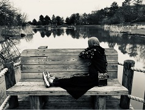
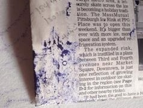

Photography and Art of the Month
As with much of what is presented on this page, none of this should be taken at face value. The interest in photography and art is more for trades and less substantial. Dissimilar to the art of culinary, much of this is not necessarily a field of pursuance. Whether this major, though not exactly intended to be either, is seen as a professional achievement or merely for entertainment purposes only is not officially known. Pictures posted here are, at the moment, intended for information into personal interests.
 Photography
 Chalk and Art